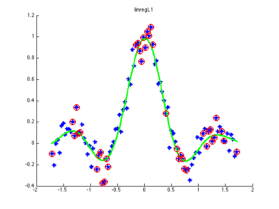
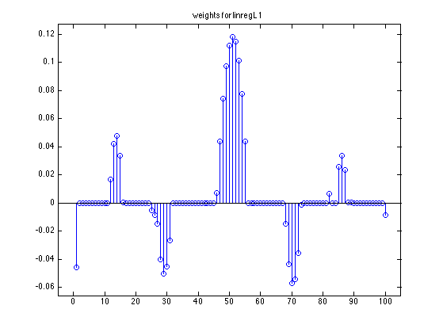
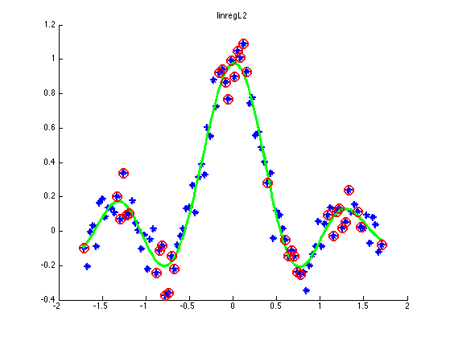
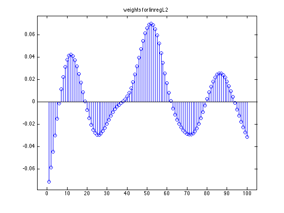
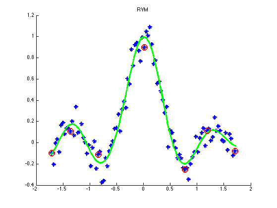
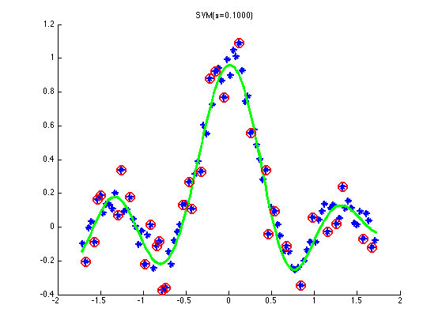
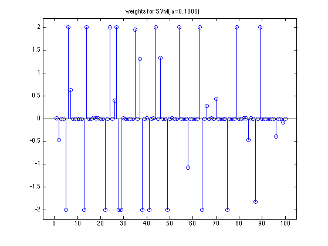
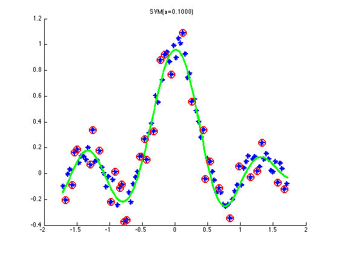
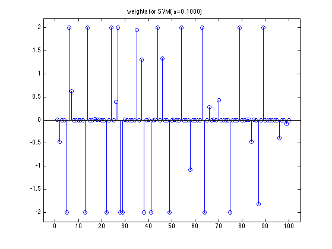

SVM Regression Demo
PMTKneedsOptimToolbox quadprog
% This file is from pmtk3.googlecode.com %requireOptimToolbox nVars = 1; nInstances = 50; setSeed(0); %[X,y] = makeData('regressionNonlinear',nInstances,nVars); % sinc function N = 100; noise = 0.1; x = 10*[-1:2/(N-1):1]'; ytrue = sin(abs(x))./abs(x); y = ytrue + noise*randn(N,1); X = mkUnitVariance(centerCols(x)); % We pick hyperparameters that result in a pretty plot lambda = 0.5; rbfScale = 0.3; kernelFn = @(X1,X2) kernelRbfSigma(X1,X2,rbfScale); Ktrain = kernelFn(X, X); %Xtest = [-5:.05:5]'; Xtest = (-10:.1:10)'; Xtest = mkUnitVariance(centerCols(Xtest)); Ktest = kernelFn(Xtest, X); preproc = preprocessorCreate; preproc.kernelFn = @(X1, X2)kernelRbfSigma(X1, X2, rbfScale); gamma = 1/(2*rbfScale^2); methods = {'l2', 'l1', 'rvm', 'svmqp', 'svmlib'}; if ~optimToolboxInstalled methods = setdiff(methods, 'svmqp'); end if ~svmInstalled methods = setdiff(methods, 'svmlib'); end for mi=1:numel(methods) method = methods{mi}; switch lower(method) case 'l2' model = linregFit(X, y, 'regType', 'L2', ... 'lambda', lambda, 'preproc', preproc); w = model.w; yhat = linregPredict(model, Xtest); lossStr = sprintf('linregL2'); fname = 'linregL2'; case 'l1', model = linregFit(X, y, 'regType',... 'L1', 'lambda', lambda,'preproc', preproc); w = model.w; SV = find(abs(w) > 1e-5); yhat = linregPredict(model, Xtest); lossStr = sprintf('linregL1'); fname = 'linregL1'; case 'rvm', model = rvmFit(X, y, 'kernelFn', ... @(X1,X2) kernelRbfGamma(X1,X2,gamma)); SV = model.Relevant; lossStr = 'RVM'; fname = 'RVM'; [N,D] = size(X); w = model.w; %w(model.Relevant) = model.hyperParams.Alpha; yhat = rvmPredict(model, Xtest); case 'svmqp', epsilon = 0.1; % default C = 1/lambda; model = svmFit(X, y,... 'kernel', @kernelRbfGamma, 'kernelParam', gamma, ... 'fitFn', @svmQPregFit, 'C', C); SV = model.svi; %[model, SV] = svmQPregFit(X, y, kernelFn, epsilon, 1*(1/lambda)); w = model.alpha; lossStr = sprintf('SVM(%s=%6.4f)', '\epsilon', epsilon); fname = 'SVMQP'; yhat = svmPredict(model, Xtest); case 'svmlib', % svmlight only works on windows %C = 1/lambda; %gamma = 1/(2*rbfScale^2); C = 2.^linspace(-5,5,10) model = svmFit(X, y, 'C', C, 'kernel', 'rbf', ... 'kernelParam', gamma, 'fitFn', @svmlibFit); w = model.alpha; SV = model.svi; lossStr = 'SVM'; fname = 'SVM'; yhat = svmPredict(model, Xtest); end % Plot results figure; hold on; plot(X,y,'*', 'markersize', 8, 'linewidth', 2); h=plot(Xtest(:,1),yhat,'g-'); set(h,'LineWidth',3); if method>1 % strcmp(lossStr(1:3), 'SVM') %SV = abs(Krbf*uRBF - y) >= changePoint; plot(X(SV),y(SV),'o','color','r', 'markersize', 12, 'linewidth', 2); %plot(Xtest(:,1),yhat+epsilon,'c--', 'linewidth', 2); %plot(Xtest(:,1),yhat-epsilon,'c--', 'linewidth', 2); %legend({'Data','prediction','Support Vectors'}); %legend({'Data','prediction','Support Vectors','Eps-Tube'}); end title(sprintf('%s', lossStr)) printPmtkFigure(sprintf('kernelRegrDemoData%s', fname)) if ~isempty(w) figure; stem(w) title(sprintf('weights for %s', lossStr)) axis_pct printPmtkFigure(sprintf('kernelRegrDemoStem%s', fname)) end end placeFigures;    
  
 